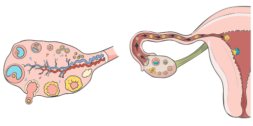

Os ovários têm como função produzir os óvulos e os hormônios estrogênio e progesterona, ambos controlados pelos hormônios gonadotrópicos, o hormônio folículo-estimulante (FSH) e o hormônio luteinizante (LH), secretados pela hipófise. As trompas são estruturas que captam o óvulo liberado pelo ovário e o leva para a cavidade uterina. Se fecundado, o óvulo dá origem ao embrião, que se implanta no endométrio uterino.
Dinâmica da ovulação.

Fonte: Servier Medical Art, 2024.